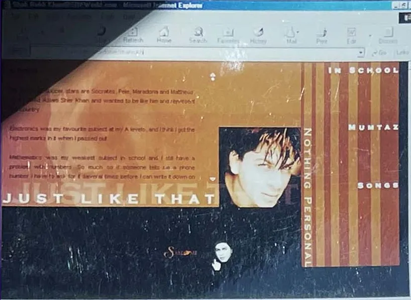

Room
Just Like That · His musings

SRKWorld.com, 2000: "Just Like That", his musings, under the tabs In School, Mumtaz, Nothing Personal and Songs. (Archive: the author's collection)
A room for the man thinking aloud: the lines he has said in public, short, dated and sourced, from 1992 to 2026. Interpretation
Rules for this room: each line is his own, under fifteen words, with a date and a source. Where the original occasion is not known, it says so. Method note
Lines with a date
| Date | His words | Occasion | Source |
|---|---|---|---|
| July 2007 | "I would like to believe that I am the last superstar of India" | Interview reported by wire services | The Himalayan Times, 29 July 2007 |
| April 2017 | "I sell dreams, and I peddle love to millions of people" | TED2017, Vancouver | TED |
| January 2018 | "We, the powerful, need to get out of the way." | Crystal Award, Davos | Business Today, 23 January 2018 |
| 4 February 2023 | "The journey is important… the end is not" | #AskSRK, on advice to his children | EastMojo, 4 February 2023 |
| 4 February 2023 | "Still feeling it bro" | #AskSRK, on Pathaan's success | EastMojo |
| 11 August 2024 | "Art is the act of affirming life above all." | Locarno, accepting the Pardo alla Carriera | Gulf Today, 11 August 2024 |
| 11 August 2024 | "It's just like being home in India." | Locarno, on the crowd | Gulf Today |
| May 2025 | "I'm Shah Rukh." | Met Gala, to a reporter who did not know him | The Hollywood Reporter India |
| 1 August 2025 | "acting is not just work, it's a responsibility." | Message after the National Award | IANS, 1 August 2025 |
| 1 August 2025 | "just keep the popcorn ready." | The same message, to his fans | IANS |
| 23 September 2025 | "a moment I will cherish for a lifetime" | Receiving the National Award | The Statesman |
| 2 November 2025 | "I will miss seeing you more than you will." | His 60th birthday, on X | Deccan Herald, 2 November 2025 |
Lines without a known occasion. These are widely attributed to him and were collected by Gulf News for his 25 years in film; the original dates and occasions are not given. [Unverified: the original occasion and date of each.]
- "Success is not a good teacher. Failure is."
- "There's only one religion in the world — hard work."
- "I don't wear my stardom like a tuxedo, I wear it like a T-shirt."
- "Don't become a philosopher before you become rich."
(Source: Gulf News, 1 November 2018) He has also said "I am the last of the stars" on The Anupam Kher Show. (Fact. Morung Express, 8 October 2025) [Unverified: the broadcast date.]
What he keeps saying. Read in order, the lines return to three ideas: he is the last of a kind of star (2007 and on Anupam Kher's show), failure teaches more than success, and the audience is home. Interpretation The man who said in 2007 that he might be the last superstar was valued first in India in 2025 (Room · Advantage). Interpretation
The 2000 page. On his website this room was his own column: Just Like That, with tabs called In School, Mumtaz, Nothing Personal and Songs. Archive: the author's collection, the screen above [Unverified: the text of those pages, to be transcribed from the author's archive with his permission.] The lines in this room are the public version of that column. Interpretation